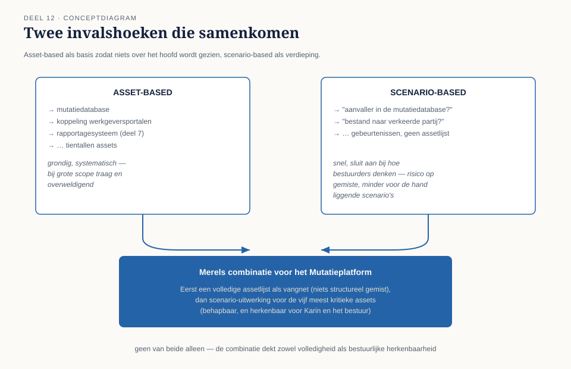
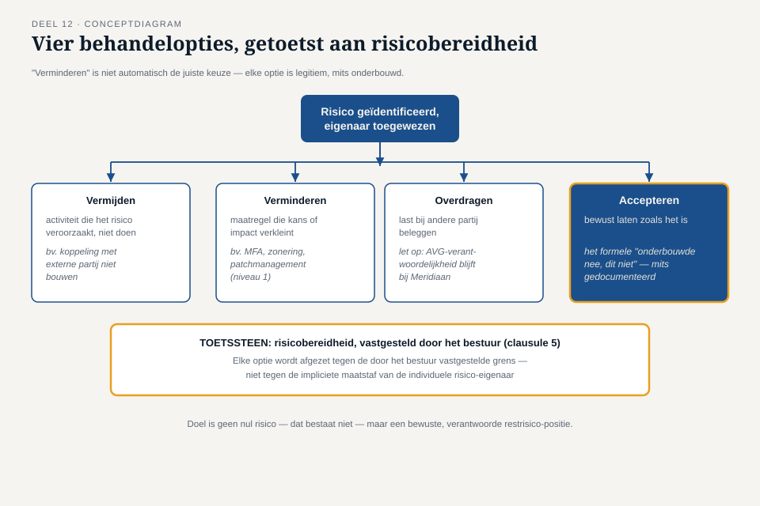
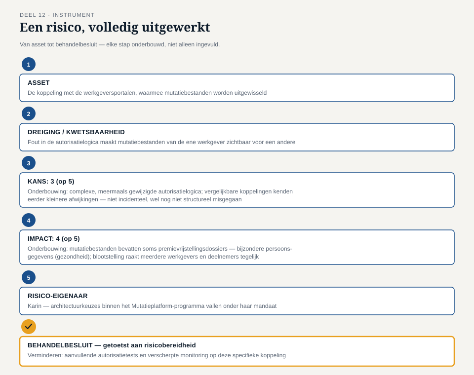

Deel 12 — Risicobeoordeling en risicobehandeling
Reader · Ductus-cursus Informatiebeveiliging en privacy · niveau 2 (professional) · deel 12 van 22
Casusvervolg: Ruuds vraag, geformaliseerd
In deel 2 vroeg Merel aan Ruud: "Als iemand van buiten dit account in handen krijgt — hoe, en wat kan diegene ermee?" Dat was een informele dreigingsanalyse. Nu, binnen het ISMS van het Mutatieplatform, moet diezelfde vraag voor tientallen systemen, gegevensstromen en processen tegelijk beantwoord worden — en niet meer uit het hoofd, maar volgens een methode die herhaalbaar, vergelijkbaar en aantoonbaar is. Dit deel formaliseert Ruuds vraag tot een volwaardige risicobeoordelingsmethode: clausule 6 van ISO/IEC 27001 in de praktijk.
Karin stelt een aanvullende eis die de rest van dit deel structureert: "Ik wil niet alleen weten wélke risico's er zijn. Ik wil weten wíe ervan wakker moet liggen — en wie straks 'ja' of 'nee' zegt tegen een investering om ze te verkleinen."
1. Asset-based versus scenario-based
Er bestaan twee hoofdbenaderingen om een risicobeoordeling te structureren, en de keuze ertussen bepaalt hoe het hele proces verloopt.
Asset-based begint bij de bezittingen: welke informatie-assets heeft de organisatie (systemen, databases, documenten, zelfs mensen met kennis), en voor elk asset: welke dreigingen en kwetsbaarheden zijn relevant? Dit is grondig en systematisch, maar kan bij een grote scope (zoals het hele Mutatieplatform) overweldigend en traag worden — met tientallen assets ontstaat al snel een enorme matrix.
Scenario-based begint bij mogelijke gebeurtenissen: "wat als een aanvaller toegang krijgt tot de mutatiedatabase?", "wat als een medewerker per ongeluk een bestand naar de verkeerde partij stuurt?" Dit is sneller te doorlopen en sluit beter aan bij hoe bestuurders en programmamanagers zoals Karin van nature denken (in gebeurtenissen, niet in assetlijsten), maar loopt het risico dat een minder voor de hand liggend scenario over het hoofd wordt gezien.
In de praktijk combineren de meeste organisaties beide: een asset-inventarisatie als basis (zodat niets structureel over het hoofd wordt gezien) met scenario-based verdieping voor de belangrijkste assets (zodat de beoordeling behapbaar en voor bestuurders herkenbaar blijft). Voor het Mutatieplatform kiest Merel voor deze combinatie: eerst een assetlijst (de mutatiedatabase, de koppeling met werkgeversportalen, het rapportagesysteem uit deel 7, enzovoort), en vervolgens voor de vijf meest kritieke assets een scenario-uitwerking.
2. Risico-eigenaarschap
Niet elk risico kan of moet door de securityfunctie zelf worden "opgelost" — en dat is precies waar veel risicobeoordelingen in de praktijk vastlopen: een lijst risico's zonder dat iemand ooit een besluit neemt over wat ermee gebeurt. ISO/IEC 27001 vereist daarom expliciet dat elk risico een risico-eigenaar krijgt: iemand met voldoende gezag om een beslissing te nemen over hoe het risico wordt behandeld, en die de gevolgen van die beslissing ook draagt.
Dit is een directe toepassing van het onderscheid uit deel 4: de securityfunctie adviseert, maar beslist meestal niet zelf. Voor een risico dat puur binnen het mutatieteam speelt, is de risico-eigenaar wellicht Karin of een teamleider. Voor een risico dat de hele organisatie raakt (bijvoorbeeld een architectuurkeuze met brede gevolgen), is het bestuur de risico-eigenaar. Merels rol is het risico helder, met feiten onderbouwd, aan de juiste eigenaar voor te leggen — niet om zelf namens die eigenaar te beslissen.
3. Vier manieren om met een risico om te gaan
Zodra een risico is geïdentificeerd en een eigenaar heeft, zijn er vier fundamentele behandelopties:
- Vermijden — de activiteit die het risico veroorzaakt, simpelweg niet uitvoeren. Bijvoorbeeld: besluiten om een bepaalde koppeling met een externe partij niet te bouwen, omdat het risico niet opweegt tegen de waarde.
- Verminderen — een maatregel treffen die de kans of de impact verkleint. De meeste maatregelen uit niveau 1 (MFA, zonering, patchmanagement) vallen in deze categorie.
- Overdragen — het risico (gedeeltelijk) bij een andere partij beleggen, bijvoorbeeld via een verzekering, of contractueel bij een leverancier. Let op: overdragen verplaatst de financiële of operationele last, maar de verwerkingsverantwoordelijkheid onder de AVG (deel 4) blijft bij Meridiaan zelf — dit is een belangrijk onderscheid dat vaak wordt vergeten.
- Accepteren — bewust besluiten het risico te laten zoals het is, omdat de kosten van verdere behandeling niet opwegen tegen de resterende impact. Dit is, mits weloverwogen en gedocumenteerd, een volkomen legitieme uitkomst — en het is precies het formele equivalent van het "onderbouwde nee, dit niet" uit de capstone-rubric van deel 10.
Een veelgemaakte fout is te denken dat "verminderen" altijd de juiste keuze is. Een organisatie die op elk risico reflexmatig een nieuwe maatregel stapelt, verliest overzicht en middelen aan risico's die eigenlijk beter geaccepteerd of vermeden hadden kunnen worden. Risicobeoordeling is niet het proces dat tot nul risico leidt — dat bestaat niet — maar het proces dat tot een bewuste, verantwoorde restrisico-positie leidt.
4. Risicobereidheid
Voordat een risico-eigenaar kan beoordelen of een risico acceptabel is, moet er een referentiekader zijn: hoeveel risico is de organisatie bereid te accepteren, in welke categorieën? Dit heet risicobereidheid (risk appetite), vastgesteld door het bestuur als onderdeel van clausule 5 (leiderschap).
Risicobereidheid is niet overal gelijk binnen een organisatie: Meridiaan zal een lagere risicobereidheid hebben voor risico's die de rechtmatigheid van gegevensverwerking raken (gezien de DNB/AFM-context en de gevoeligheid van pensioengegevens) dan voor, bijvoorbeeld, risico's rond de esthetische vormgeving van het deelnemersportaal. Zonder een vastgestelde risicobereidheid heeft elke individuele risico-eigenaar zijn eigen impliciete maatstaf — wat tot inconsistente en moeilijk te verantwoorden beslissingen leidt. Met een vastgestelde risicobereidheid kan Merel een risico voorleggen met een heldere vraag: "dit risico ligt boven onze vastgestelde grens — hoe wilt u het behandelen?", in plaats van elke keer opnieuw te moeten uitleggen waarom iets al dan niet zorgelijk is.
5. Kans en impact: een werkbare schaal
Om risico's onderling vergelijkbaar te maken, gebruikt Merel een eenvoudige schaal voor kans (hoe waarschijnlijk is het scenario) en impact (hoe ernstig zijn de gevolgen als het zich voordoet), elk bijvoorbeeld op een schaal van 1 (laag) tot 5 (zeer hoog). Het product of de combinatie van beide bepaalt de risicoscore, die vervolgens wordt afgezet tegen de risicobereidheid uit paragraaf 4.
Een valkuil hierbij: kans en impact zonder toelichting invullen ("kans: 3, impact: 4") levert een getal op dat niemand buiten de opsteller kan navolgen of ter discussie kan stellen. Een goede risicobeoordeling legt bij elke score een korte onderbouwing vast — waarom kans 3 en niet 2 of 4, gebaseerd op welke feiten of aannames — zodat de score aantoonbaar is (de rode draad uit deel 1) en niet alleen een intuïtief cijfer.
6. Terug naar Karins vraag
Met dit instrumentarium kan Merel Karins vraag – "wie moet ervan wakker liggen, en wie beslist" – nu concreet beantwoorden voor elk risico in het Mutatieplatform: een asset- en scenario-gebaseerde inventarisatie, met per risico een onderbouwde kans- en impactscore, een aangewezen risico-eigenaar, en een expliciete keuze uit de vier behandelopties, getoetst aan de door het bestuur vastgestelde risicobereidheid. Dit resultaat vormt de basis voor de Verklaring van Toepasselijkheid uit deel 11: welke van de 93 controls uit Bijlage A worden toegepast, volgt rechtstreeks uit welke risico's hier worden geïdentificeerd en hoe ze worden behandeld.


